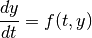
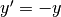
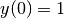
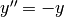
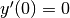

Differential equation¶
The scipy library contains a large number of scientific modules. This is almost a standard library in the sense that it contains all standard numerical algorithms. The full documentation can be found at http://docs.scipy.org/doc/scipy/reference/.
The module that contains the functions for solving differential equation is the scipy.integrate module with the odeint() et ode() functions. We will present only the ode() function which is more complete. Those functions can solve ordinary differential equation :

where y is a numpy array.
Let us look to the following example  with :
from scipy.integrate import ode
def f(t, y):
return -y
r = ode(f).set_integrator('vode')
r.set_initial_value(y=1,t=0)
print r.integrate(1)
print r.t, r.y
Few remarks :
- Many solvers can be used (see the online documentation). Each solver is indeed a Fortran library that was adapted for scipy. Each solver has its own parameters. The most common parameters are the absolute (atol) and relative precision (rtol). Compared to well known imperative solvers (like the Euler or Runge-Kutta methods), the scipy solvers are able to adapt the size of the steps in order to obtain the required precision.
- For highest order differential equation, the trick consists in writting a first order equation by adding intermediate functions which are the derivative of the initial functions.
For example : solution of the linearized pendulum equation: , with initial conditions and .
from scipy.integrate import ode
from numpy import *
def f(t, Y):
y, yprime=Y
return array([yprime, -y])
r = ode(f).set_integrator('vode')
r.set_initial_value(array([1,0]),0)
print r.integrate(pi)